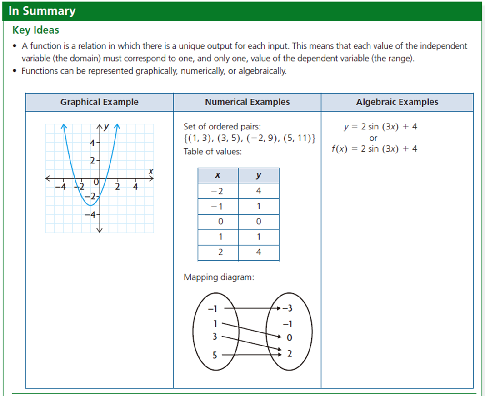
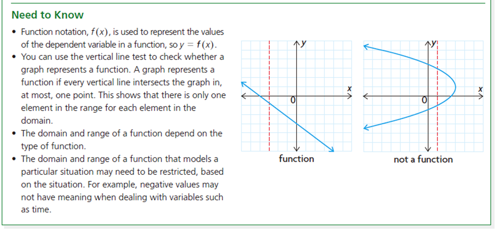
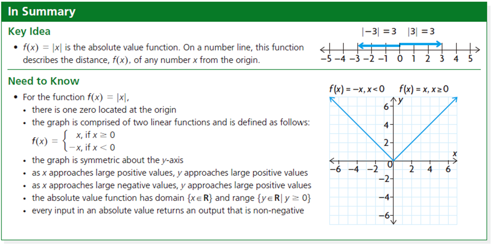
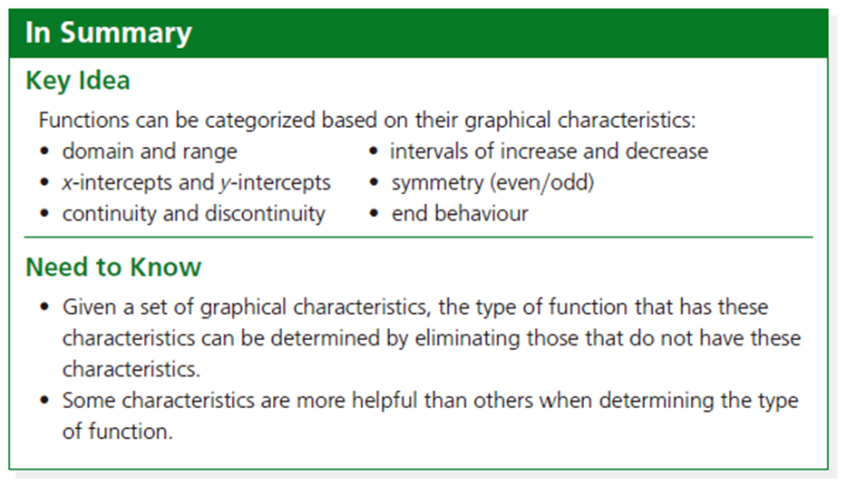
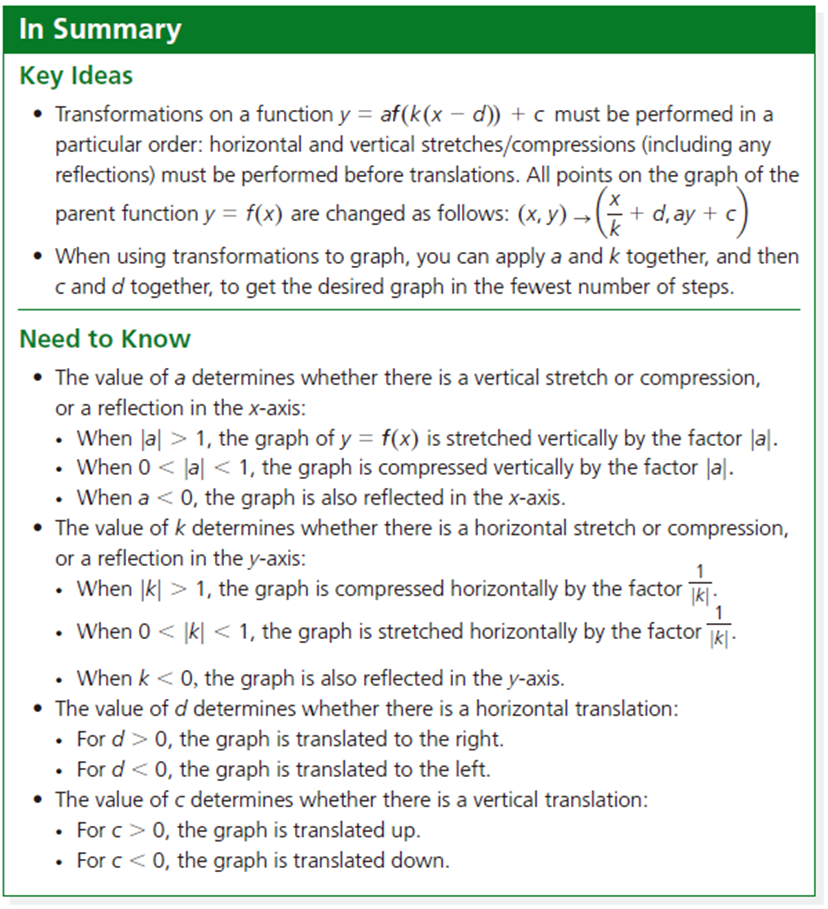
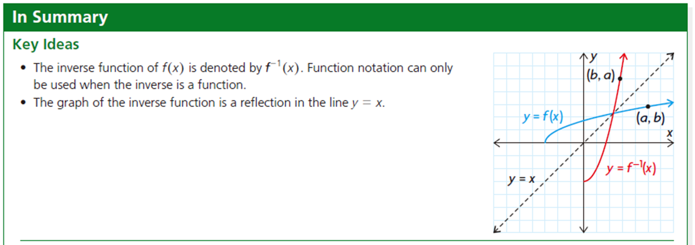
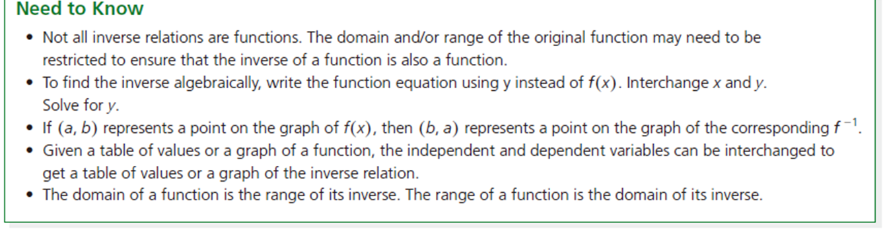
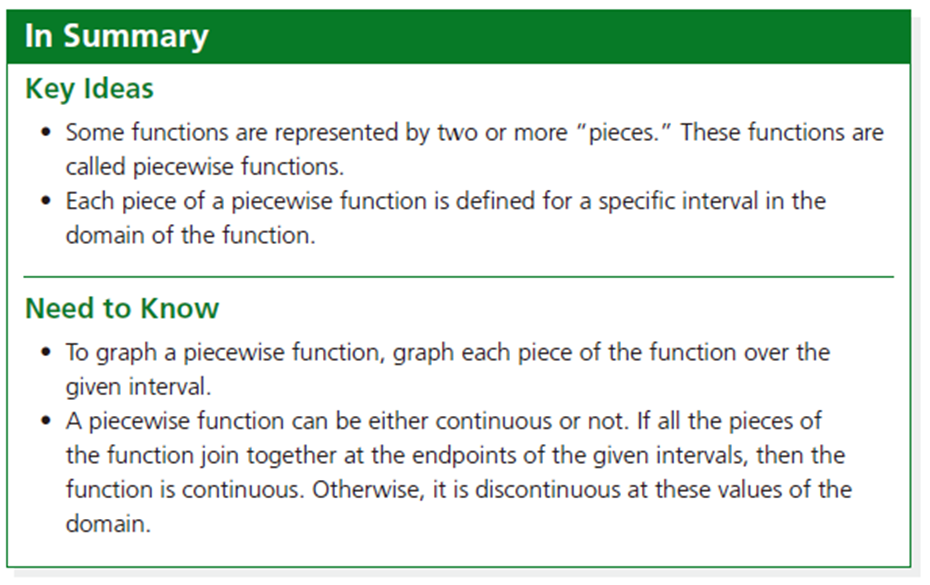
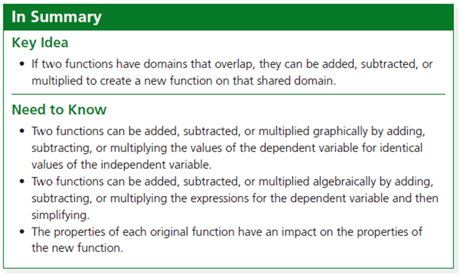

That's a Wrap!
Learning Goals
- Students have an idea of how the MHF4U course will work.
- Students will review some work from previous grades.
- Students can represent and describe functions and their characteristics.
- Students know what the vertical line test is and can use it.
- Students know different ways in which functions can be represented.
- Students are comfortable with function notation.
- Students know what absolute value functions are and how they are defined.
- Students can sketch absolute value graphs, and transformations of absolute value graphs.
- Students can solve for the unknown variable in absolute value inequalities.
- Students can compare and contrast the properties of various types of functions.
- Students can describe what the following concepts mean: Domain and range, intervals of increase and decrease, x-intercepts and y-intercepts, symmetry (even, odd or neither), continuity and discontinuity, end behaviour.
- Students can apply transformations to parent functions, and use the most efficient methods to sketch the graphs of the functions.
- Students can determine the equation of an inverse relation and the conditions for an inverse relation to be a function.
- Students can find the inverse of a function graphically and algebraically.
- Students can understand, interpret, and graph situations that are described by piecewise functions.
- Students can explore the properties of the sum, difference, and product of two functions.
- Students can explain properties of functions that have been added, subtracted, multiplied, and divided.
- Students can perform operations with functions.
Success Criteria
You will know that you are successful if you can:
- I have an idea how the MHF4U course will work.
- I reviewed some work from previous grades.
- I can represent and describe functions and their characteristics.
- I know what the vertical line test is and can use it.
- I know different ways in which functions can be represented.
- I am comfortable with function notation.
- I know what absolute value functions are and how they are defined.
- I can sketch absolute value graphs, and transformations of absolute value graphs.
- I can solve for the unknown variable in absolute value inequalities.
- I can compare and contrast the properties of various types of functions.
- I can describe what the following concepts mean: Domain and range, intervals of increase and decrease, x-intercepts and y-intercepts, symmetry (even, odd or neither), continuity and discontinuity, end behaviour.
- I can apply transformations to parent functions, and use the most efficient methods to sketch the graphs of the functions.
- I can determine the equation of an inverse relation and the conditions for an inverse relation to be a function.
- I can find the inverse of a function graphically and algebraically.
- I can understand, interpret, and graph situations that are described by piecewise functions.
- I can explore the properties of the sum, difference, and product of two functions.
- I can explain properties of functions that have been added, subtracted, multiplied, and divided.
- I can perform operations with functions.
Summary








